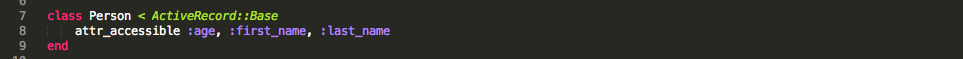

Week 8 Technical Blog - Active Record

What is Active Record?
Active Record at it's simplest is an ORM or "Object Relational Mapping". It sits between your database and your code and maps your database to your code. Active Record also links directly to the "Model" in Model, View, Controller(MVC) of the Rails framework.
With Active Record, we model our data with classes within Ruby. These classes are then used by Active Record to create and update the database for us. There is no need to open up SQL and create tables. There are many built in methods that allow for easy schema maintenance.
Here are a few of the methods provided with Active Record.
- add_column
- rename_column
- create_table
- rename_table
- drop_table
This provides a very flexible way to maintain our database schema and also takes a lot of burden off the programmer as far as knowing all the details with maintaining a database. All the programmer has to know is Ruby and the Active Record syntax.
Another powerful feature of Active Record is it's ability to work with multiple database types. While Active Record works locally with SQLite for development it also works with pretty much all the various types of databases without modifying your code. This is a pretty cool feature and yet again minimizes the work involved in maintaining your application.
Here is an example of a Ruby class that models a Person. This class is then used to create and maintain the Persons table in the database by Active Record

You can see that it is pretty much a standard Ruby class other than it inherits from ActiveRecord::Base and we use the attr_accessible method to set the getter and setter methods for the instance variables rather than attr_accessor. Attr_accessible is part of the rails framework and I won't cover it here but feel free to look at the resource section below to find out more about it.
Conclusion
Active Record is a powerful way for programmers to manage database schema and records with minimal database knowledge. It works with many different database types and gives flexibility and control to programmers.
It relates directly to the model in Model View Controller and is a type of ORM or Object Relational Mapping. It is used heavily for rapid prototyping and development but not always for live applications where a DB Admin is involved to maintain the schema and database for the application.
Resources